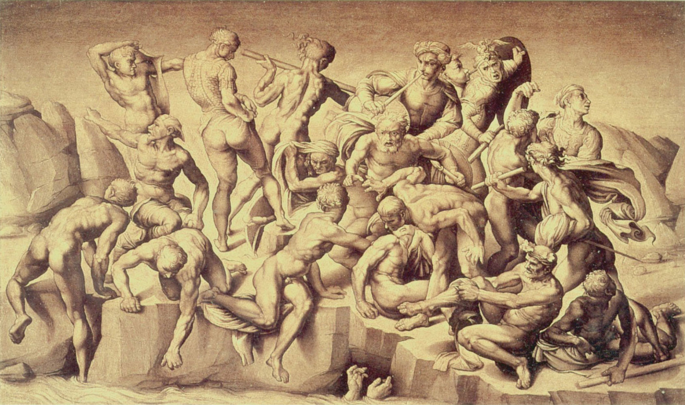
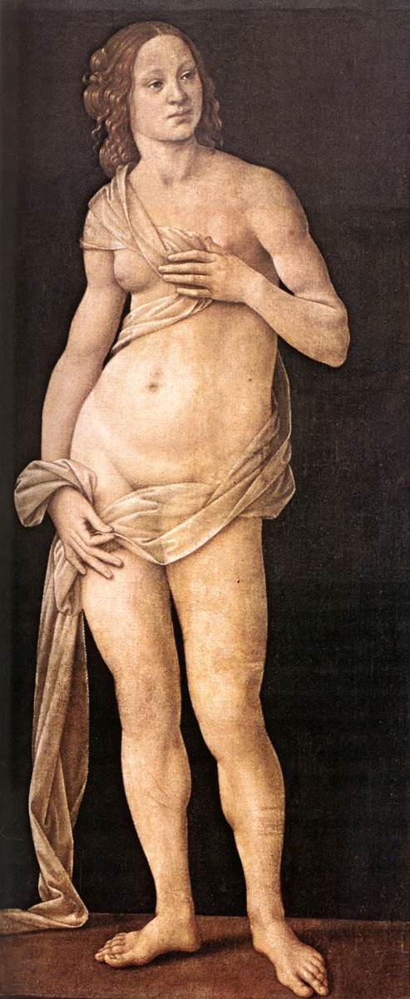
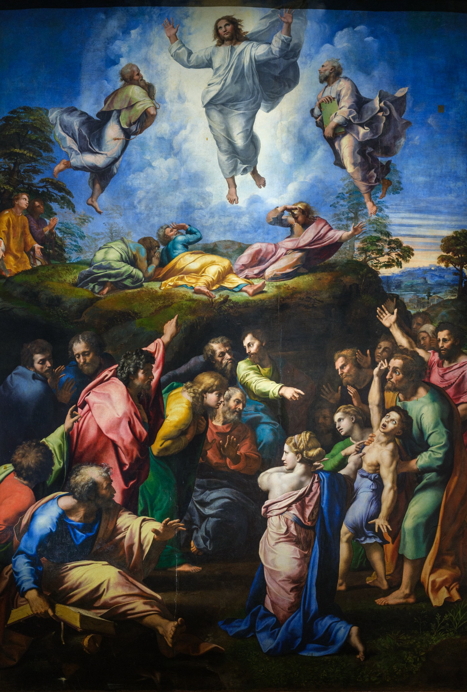

Masaccio
Adam et Ève chassés du Paradis
La honte et la douleur se lisent dans les visages et les gestes. Le corps exprime une émotion, et pas seulement une histoire sacrée.
Domaine public · reproduction d’une fresque
Parcours thématique · 03
Apprendre à voir, oser regarder.
De la douleur d’Adam et Ève à la sensualité des Vénus, la Renaissance invente mille manières de représenter le corps. Six étapes pour observer les gestes, les muscles, la beauté et le désir — sans perdre de vue les œuvres.
← Retour aux parcours01 · Explorer
Du visage douloureux à la présence physique : le corps exprime désormais ce que ressent un être humain.
La honte et la douleur se lisent dans les visages et les gestes. Le corps exprime une émotion, et pas seulement une histoire sacrée.

Le bois sculpté, le corps amaigri et les cheveux dénoués montrent une beauté bouleversante, loin de l’idéal classique.

Le raccourci spectaculaire rapproche le corps du spectateur. Observez les pieds, les mains et le visage.
À vous de regarder : Quel geste ou quelle expression rend ce corps humain ?
02 · Explorer
Le nu n’est plus seulement une référence antique : il devient fragile, vivant, parfois troublant.

Le jeune homme qui grelotte rend le nu profondément humain. Regardez les épaules contractées et les bras serrés.

Un adolescent victorieux, mais fragile : sa posture souple, son sourire et ses accessoires brouillent l’image habituelle du héros.

Le corps semble s’abandonner tout en se tordant. Le marbre suggère à la fois la force musculaire et le relâchement.
À vous de regarder : Comment la pose transforme-t-elle notre idée du nu ?
03 · Explorer
Le corps se tord, lutte, court et se redresse. Les artistes en explorent toutes les possibilités.

Les muscles deviennent un vocabulaire du mouvement. Comparez les corps de face, de profil et de dos.

Dans cette copie ancienne d’une composition perdue, les corps se retournent, se redressent et se croisent dans une agitation collective.

Des corps surgissent du sol, s’étirent et se redressent : une véritable étude des possibilités du nu.
À vous de regarder : Dans quelle direction chaque corps entraîne-t-il votre regard ?
04 · Explorer
Proportions, harmonie et mythologie : comment représenter une beauté idéale ?

Le corps allongé et les contours ondulants composent un idéal poétique, davantage guidé par la ligne que par l’anatomie.

Une Vénus debout, presque immobile : le corps est modelé avec douceur, dans une pose retenue.

Trois figures, trois points de vue : le même idéal de beauté se découvre de face, de dos et de trois quarts.
À vous de regarder : Qu’est-ce qui distingue une beauté idéalisée d’un corps réel ?
05 · Explorer
La nudité change de sens selon le regard, le décor et les gestes. De la déesse rêvée à la femme qui nous observe.

Le corps suit les courbes du paysage. La nudité devient paisible, offerte au regard mais sans rencontre avec le spectateur.

Cette fois, Vénus nous regarde. L’espace domestique, la main et les étoffes rendent la scène plus intime.

Peau lisse, gestes ambigus, regards croisés : la beauté devient une énigme sensuelle et morale.
À vous de regarder : Qui regarde qui, et que change ce regard ?
06 · Explorer
L’anatomie devient monumentale, expressive, presque impossible : le corps dépasse l’échelle humaine.

Le corps monumental est au repos, mais l’attention est tendue. Observez les mains, le regard et la jambe d’appui.

La composition oppose le corps lumineux et suspendu du Christ aux corps agités et expressifs au premier plan.

La sculpture s’enroule dans l’espace : pour saisir la lutte, il faut imaginer tourner autour des figures.
À vous de regarder : Comment l’artiste donne-t-il une force extraordinaire au corps ?